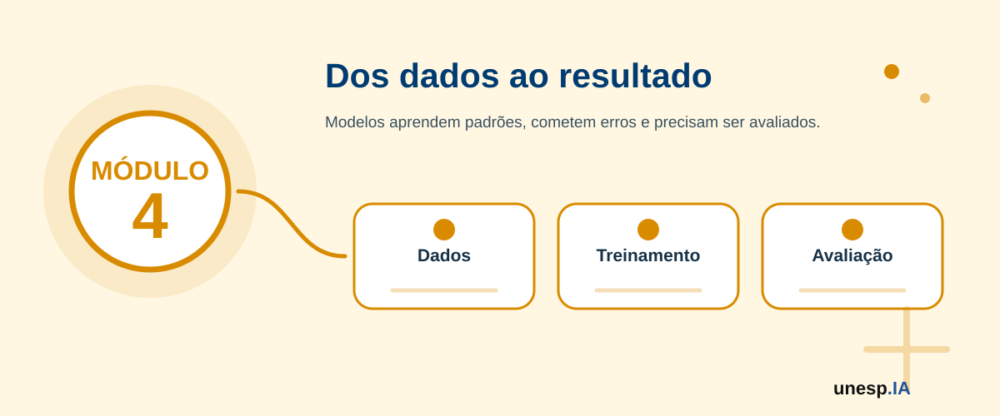

Compreendendo o Funcionamento da Inteligência Artificial
Ferramentas relacionadas neste módulo

Apresentação
Nos módulos anteriores, o participante conheceu os fundamentos da Inteligência Artificial, utilizou ferramentas de IA em situações práticas e produziu conteúdos digitais com apoio de tecnologias generativas. O Módulo 4 aprofunda a compreensão sobre como a IA funciona, sem exigir programação avançada ou conhecimento matemático aprofundado.
A proposta é explicar, de forma acessível e prática, como sistemas inteligentes utilizam dados, aprendem padrões, produzem respostas, cometem erros, são avaliados e podem ser interpretados. O objetivo é ajudar o participante a compreender melhor o que acontece “por trás” das ferramentas de IA, desenvolvendo uma visão mais crítica, segura e consciente.
Este módulo apresenta conceitos como dados, atributos, exemplos, treinamento, teste, classificação, regressão, agrupamento, redes neurais, modelos generativos, avaliação de modelos, viés, qualidade dos dados, explicabilidade e limites da IA. A abordagem será sempre contextualizada por exemplos reais e atividades práticas simples.
1. Organização do Módulo
Carga horária total
10 horas.
Público recomendado
Cidadãos em geral, estudantes, professores, trabalhadores, servidores públicos, empreendedores e participantes interessados em compreender melhor o funcionamento da Inteligência Artificial, especialmente aqueles que já realizaram os Módulos 1, 2 e/ou 3.
Objetivo geral
Compreender, de forma introdutória e acessível, como sistemas de Inteligência Artificial funcionam, como aprendem a partir de dados, como produzem respostas, como são avaliados, quais erros podem ocorrer e quais cuidados são necessários para interpretar seus resultados de forma crítica e responsável.
Competências desenvolvidas
Ao final do módulo, espera-se que o participante seja capaz de:
- compreender o papel dos dados no funcionamento da IA;
- diferenciar dado, informação, atributo, exemplo, classe e rótulo;
- compreender o ciclo básico de construção de um modelo de IA;
- diferenciar tarefas de classificação, regressão, agrupamento e geração;
- compreender, em nível introdutório, como funciona o treinamento e o teste de modelos;
- reconhecer o que são erro, acerto, generalização e sobreajuste;
- entender noções básicas de redes neurais e aprendizado profundo;
- compreender como modelos generativos produzem textos e imagens de forma introdutória;
- interpretar métricas simples de avaliação, como acurácia, precisão e recall;
- reconhecer problemas relacionados à qualidade dos dados, vieses e limitações;
- utilizar ferramentas simples para realizar experimentos introdutórios com IA;
- produzir um mini experimento ou relatório explicativo sobre funcionamento da IA.
2. Estrutura das Unidades
| Unidade | Tema | Carga horária |
|---|---|---|
| Unidade 4.1 | Dados, informação e qualidade dos dados | 2h |
| Unidade 4.2 | Como modelos aprendem: treinamento, teste e padrões | 2h |
| Unidade 4.3 | Tipos de problemas em IA: classificação, regressão, agrupamento e geração | 2h |
| Unidade 4.4 | Redes neurais, deep learning e IA generativa | 2h |
| Unidade 4.5 | Avaliação, erros, vieses, explicabilidade e laboratório experimental | 2h |
| Total | 10h |
A sequência pedagógica segue a lógica:
dados → aprendizagem → tipos de problemas → redes neurais/generação → avaliação e experimento
Unidade 4.1 – Dados, informação e qualidade dos dados
Carga horária
2 horas
Objetivo da unidade
Compreender o papel dos dados no funcionamento da Inteligência Artificial, diferenciando dados, informação, atributos, exemplos, rótulos e qualidade dos dados.
Situação de abertura
Uma escola quer entender quais estudantes podem precisar de apoio extra.
Uma loja quer saber quais produtos vendem mais.
Uma prefeitura quer organizar solicitações de cidadãos.
Um aplicativo de fotos quer reconhecer pessoas, animais e lugares.
Um banco quer identificar compras suspeitas.
Em todos esses casos, a IA precisa de dados. Sem dados adequados, o sistema não consegue aprender padrões confiáveis.
Conceitos principais
Dados
Dados são registros brutos que representam fatos, eventos, características ou observações.
Exemplos:
- idade;
- data;
- nota;
- foto;
- texto;
- localização;
- valor de compra;
- horário;
- frequência;
- número de atendimentos;
- mensagem;
- categoria de produto.
Informação
Informação é o dado organizado e interpretado de forma significativa.
Exemplo:
Dado: “35”.
Informação: “A pessoa tem 35 anos”.
Dado: “R$ 500,00”.
Informação: “Compra no valor de R$ 500,00 realizada às 2h da manhã”.
Exemplo ou instância
Um exemplo é um registro usado para o aprendizado da IA.
Exemplo em uma tabela de estudantes:
| Idade | Frequência | Nota | Situação |
|---|---|---|---|
| 17 | 92% | 8,5 | Aprovado |
Cada linha da tabela pode ser um exemplo.
Atributos ou características
Atributos são as informações usadas para descrever cada exemplo.
No caso de estudantes, atributos podem ser:
- idade;
- frequência;
- nota;
- participação;
- atividades entregues.
No caso de compras, atributos podem ser:
- valor;
- horário;
- local;
- tipo de produto;
- forma de pagamento.
Rótulo ou classe
Rótulo é a resposta que o modelo tenta aprender em alguns tipos de problemas.
Exemplos:
- aprovado ou reprovado;
- fraude ou compra normal;
- gato ou cachorro;
- spam ou mensagem legítima;
- cliente interessado ou não interessado.
Dados estruturados e não estruturados
Dados estruturados
São dados organizados em tabelas, com linhas e colunas.
Exemplos:
- planilhas;
- cadastros;
- registros de vendas;
- notas escolares;
- indicadores municipais.
Dados não estruturados
São dados sem organização em tabela tradicional.
Exemplos:
- textos;
- imagens;
- áudios;
- vídeos;
- mensagens;
- documentos PDF.
Qualidade dos dados
A qualidade dos dados influencia diretamente o resultado da IA.
Dados de baixa qualidade podem gerar respostas ruins, injustas ou pouco confiáveis.
Problemas comuns nos dados
Dados ausentes
Informações faltando.
Exemplo: cadastro sem telefone ou endereço.
Dados incorretos
Informações registradas de forma errada.
Exemplo: idade digitada como 250 anos.
Dados duplicados
Mesmo registro aparece mais de uma vez.
Exemplo: o mesmo cliente cadastrado duas vezes.
Dados desatualizados
Informações antigas que não representam a realidade atual.
Exemplo: endereço antigo.
Dados enviesados
Dados que representam apenas parte da população ou carregam desigualdades históricas.
Exemplo: sistema treinado apenas com dados de um grupo específico.
Se uma IA for treinada com fotos de frutas apenas em ambientes bem iluminados, ela pode errar ao reconhecer frutas em fotos escuras.
Se um sistema de atendimento for treinado com poucos exemplos de reclamações, pode classificar pedidos de forma inadequada.
Se um modelo de crédito usar dados históricos injustos, pode repetir desigualdades.
A IA não melhora automaticamente dados ruins. Muitas vezes, quanto mais sofisticado o sistema, mais importante se torna a qualidade dos dados.
Observe uma tabela simples com informações de pessoas, produtos ou estudantes e responda:
- Quais são os dados?
- Quais são os atributos?
- Existe algum rótulo?
- Há dados faltando?
- Há dados incorretos?
- Como esses problemas poderiam afetar uma IA?
Atividade guiada – Limpando uma pequena base de dados
Objetivo
Identificar problemas simples de qualidade dos dados.
Passo a passo
- O instrutor apresenta uma pequena tabela com erros.
- Os participantes identificam dados faltantes, duplicados ou incorretos.
- O grupo discute quais problemas poderiam prejudicar uma IA.
- Os participantes sugerem correções.
- O instrutor mostra a tabela corrigida.
- A turma discute como dados melhores ajudam a gerar resultados melhores.
Produto da unidade
Tabela simples revisada e lista de problemas de qualidade dos dados.
Se a IA aprende com dados, o que acontece quando os dados são incompletos, injustos ou não representam todas as pessoas?
Unidade 4.2 – Como modelos aprendem: treinamento, teste e padrões
Carga horária
2 horas
Objetivo da unidade
Compreender como modelos de IA aprendem padrões a partir de exemplos, como são treinados, testados e avaliados de forma introdutória.
Situação de abertura
Imagine que uma pessoa quer aprender a diferenciar mensagens normais de golpes. Ela observa vários exemplos: mensagens verdadeiras, mensagens falsas, pedidos suspeitos, links estranhos e textos com urgência.
Com o tempo, começa a perceber padrões: mensagens falsas costumam pedir dinheiro rapidamente, usam links desconhecidos ou tentam causar medo.
Um modelo de IA aprende de forma parecida: observa exemplos, identifica padrões e tenta aplicar esses padrões a novos casos.
Conceitos principais
Modelo de IA
Um modelo é uma estrutura computacional que aprende padrões a partir de dados.
Depois de treinado, o modelo pode receber uma nova entrada e produzir uma resposta.
Treinamento
Treinamento é o processo em que o modelo analisa exemplos para aprender padrões.
Exemplo:
Um modelo recebe muitas imagens de gatos e cachorros. Ele aprende características comuns de cada animal.
Teste
Teste é a etapa em que o modelo é avaliado com exemplos que ele ainda não viu.
Isso ajuda a verificar se ele realmente aprendeu ou apenas decorou os exemplos de treinamento.
Padrão
Padrão é uma regularidade observada nos dados.
Exemplos:
- mensagens fraudulentas podem conter links suspeitos;
- compras suspeitas podem ocorrer em horários incomuns;
- vídeos recomendados podem ter temas parecidos com vídeos assistidos;
- fotos de gatos podem ter características visuais semelhantes.
Treino e teste: uma analogia
Imagine um aluno estudando para uma prova.
Se ele apenas decora as respostas dos exercícios, pode ir mal em uma questão nova. Mas se entende o conceito, consegue resolver problemas diferentes.
Com IA ocorre algo semelhante. Um bom modelo não deve apenas “decorar” exemplos. Ele deve aprender padrões que funcionem em novas situações.
Generalização
Generalização é a capacidade do modelo de funcionar bem em exemplos novos, não apenas nos dados usados no treinamento.
Exemplo:
Um modelo treinado com várias fotos de cachorros deve reconhecer um cachorro em uma foto nova, com outro fundo, outra luz ou outra posição.
Sobreajuste
Sobreajuste, ou overfitting (sobreajuste), ocorre quando o modelo se adapta demais aos dados de treinamento e não funciona bem em situações novas.
Exemplo:
Um estudante decora exatamente as respostas de uma lista, mas não consegue resolver uma questão parecida na prova.
Subajuste
Subajuste ocorre quando o modelo não aprende padrões suficientes.
Exemplo:
Um estudante estudou pouco e não consegue resolver nem os exercícios já vistos.
Etapas básicas de criação de um modelo
- Definir o problema.
- Coletar dados.
- Organizar e preparar dados.
- Separar dados de treinamento e teste.
- Treinar o modelo.
- Testar o modelo.
- Avaliar os resultados.
- Ajustar ou melhorar.
- Usar com supervisão humana.
Um banco pode treinar um modelo com exemplos de compras normais e suspeitas.
Depois, quando uma nova compra acontece, o modelo analisa se ela parece normal ou suspeita.
Mas a decisão não deve depender apenas do modelo. Pode haver bloqueios indevidos ou falhas na detecção.
Um modelo pode acertar muitos casos e ainda assim errar casos importantes. Por isso, é necessário avaliar os resultados e compreender os tipos de erro.
Pense em um modelo que identifica golpes em mensagens.
- Quais exemplos seriam usados no treinamento?
- Quais sinais poderiam indicar golpe?
- Como testar se o modelo funciona?
- Que erro seria mais perigoso: marcar mensagem verdadeira como golpe ou deixar passar uma mensagem falsa?
Atividade guiada – Treinamento e teste no papel
Objetivo
Simular o processo de treinamento e teste de um modelo.
Passo a passo
- O instrutor apresenta exemplos de mensagens ou imagens.
- A turma separa os exemplos em categorias.
- O grupo define padrões observados.
- O instrutor apresenta novos exemplos.
- Os participantes classificam os novos casos.
- A turma compara acertos e erros.
- O grupo discute como melhorar a classificação.
Produto da unidade
Quadro com padrões observados, exemplos de teste, acertos e erros.
Quando uma IA erra, o problema está sempre no modelo ou também pode estar nos dados, no contexto e na forma como o sistema foi usado?
Unidade 4.3 – Tipos de problemas em IA: classificação, regressão, agrupamento e geração
Carga horária
2 horas
Objetivo da unidade
Apresentar os principais tipos de problemas que a IA pode resolver, diferenciando classificação, regressão, agrupamento e geração de conteúdo.
Situação de abertura
Uma IA pode dizer se uma mensagem é golpe ou não.
Outra pode prever o valor aproximado de uma casa.
Outra pode agrupar clientes com comportamentos parecidos.
Outra pode gerar uma imagem a partir de uma descrição.
Essas tarefas são diferentes. Cada uma representa um tipo de problema em IA.
Tipo 1 – Classificação
Classificação é quando a IA escolhe uma categoria para uma entrada.
Exemplos:
- spam ou não spam;
- fraude ou compra normal;
- gato ou cachorro;
- aprovado ou reprovado;
- urgente ou não urgente;
- reclamação sobre saúde, educação ou transporte;
- comentário positivo, negativo ou neutro.
Uma prefeitura pode classificar solicitações dos cidadãos por tema, como iluminação pública, saúde, transporte ou limpeza urbana.
Um banco pode classificar uma transação como normal ou suspeita.
Um aplicativo de fotos pode classificar imagens por objetos ou pessoas.
Tipo 2 – Regressão
Regressão é quando a IA tenta prever um valor numérico.
Exemplos:
- prever preço de imóvel;
- estimar tempo de chegada;
- prever vendas;
- estimar consumo de energia;
- prever temperatura;
- estimar nota provável;
- prever demanda de atendimento.
Um aplicativo de transporte estima o tempo de chegada.
Uma empresa pode prever vendas do próximo mês.
Uma prefeitura pode estimar aumento de demanda em um serviço.
Tipo 3 – Agrupamento
Agrupamento é quando a IA organiza exemplos em grupos parecidos, sem necessariamente ter respostas prontas.
Exemplos:
- agrupar clientes com perfis semelhantes;
- agrupar estudantes com dificuldades parecidas;
- agrupar reclamações por assunto;
- agrupar notícias por tema;
- organizar documentos semelhantes.
Uma escola pode identificar grupos de estudantes com diferentes necessidades de apoio.
Uma empresa pode identificar perfis de clientes.
Uma secretaria municipal pode agrupar solicitações semelhantes.
Tipo 4 – Geração
Geração é quando a IA cria novos conteúdos.
Exemplos:
- gerar texto;
- gerar imagem;
- gerar roteiro;
- gerar código;
- gerar música;
- gerar vídeo;
- gerar resumo;
- gerar apresentação.
Um professor pode gerar exemplos para uma aula.
Um comerciante pode gerar ideias de divulgação.
Um cidadão pode gerar uma mensagem formal.
Um servidor público pode gerar uma primeira versão de comunicado.
Diferenças entre os tipos
| Tipo de problema | O que a IA faz | Exemplo |
|---|---|---|
| Classificação | Escolhe uma categoria | Spam ou não spam |
| Regressão | Prevê um número | Preço de imóvel |
| Agrupamento | Organiza por semelhança | Grupos de clientes |
| Geração | Cria conteúdo novo | Texto ou imagem |
Cada tipo de problema exige dados, métodos e formas de avaliação diferentes. Usar a abordagem errada pode gerar resultados inadequados.
Classifique as situações abaixo:
- Prever o preço de uma casa.
- Identificar se uma mensagem é golpe.
- Agrupar alunos por dificuldades semelhantes.
- Criar uma imagem para um cartaz.
- Estimar o número de atendimentos em uma unidade de saúde.
- Separar reclamações por tema.
Atividade guiada – Que tipo de problema é esse?
Objetivo
Identificar o tipo de tarefa de IA em diferentes situações reais.
Passo a passo
- O instrutor apresenta cartões com situações.
- Os participantes classificam cada situação como:
- classificação;
- regressão;
- agrupamento;
- geração.
- O grupo justifica a escolha.
- O instrutor discute possíveis dúvidas.
- A turma cria uma tabela final com exemplos.
Produto da unidade
Tabela de tipos de problemas em IA com exemplos reais.
Antes de usar IA, por que é importante entender qual tipo de problema queremos resolver?
Unidade 4.4 – Redes neurais, Deep Learning e IA Generativa
Carga horária
2 horas
Objetivo da unidade
Compreender, em nível introdutório, o que são redes neurais, aprendizado profundo e modelos generativos, relacionando esses conceitos a aplicações reais como reconhecimento de imagens, linguagem natural e geração de conteúdos.
Situação de abertura
Um celular reconhece o rosto de uma pessoa.
Uma ferramenta traduz automaticamente um texto.
Um assistente virtual responde perguntas.
Uma IA cria uma imagem a partir de uma frase.
Um aplicativo transforma fala em texto.
Essas aplicações geralmente envolvem modelos mais complexos, como redes neurais e aprendizado profundo.
O que são redes neurais?
Redes neurais artificiais são modelos computacionais inspirados, de forma simplificada, na ideia de conexões entre neurônios.
Elas não funcionam como o cérebro humano, mas utilizam unidades conectadas que recebem informações, processam sinais e produzem saídas.
Analogia simples
Imagine uma equipe de pessoas avaliando uma imagem.
Uma pessoa observa a cor.
Outra observa o formato.
Outra observa a textura.
Outra observa o contorno.
No final, o grupo decide se a imagem parece ser de uma maçã ou de uma laranja.
Uma rede neural faz algo parecido de forma matemática, analisando diferentes características e combinando informações.
Camadas de uma rede neural
Uma rede neural pode ser entendida como formada por camadas:
Camada de entrada
Recebe os dados.
Exemplo: pixels de uma imagem ou palavras de um texto.
Camadas intermediárias
Processam padrões e características.
Exemplo: bordas, formas, combinações de palavras, relações entre termos.
Camada de saída
Produz a resposta.
Exemplo: “gato”, “cachorro”, “fraude”, “não fraude”, “próxima palavra”.
Deep Learning
Deep Learning, ou aprendizado profundo, utiliza redes neurais com muitas camadas.
Essas camadas permitem aprender padrões mais complexos em imagens, textos, sons e vídeos.
Aplicações do Deep Learning
- reconhecimento facial;
- tradução automática;
- assistentes virtuais;
- carros autônomos;
- diagnóstico por imagem;
- geração de texto;
- geração de imagem;
- reconhecimento de voz.
Como modelos generativos produzem texto?
Modelos de linguagem, como assistentes conversacionais, são treinados com grandes quantidades de textos. Eles aprendem padrões de linguagem, relações entre palavras, estruturas de frases e estilos de escrita.
Quando recebem um prompt (instrução para a IA), tentam produzir uma resposta provável com base no contexto fornecido.
Isso não significa que “sabem” tudo. Eles geram respostas com base em padrões aprendidos.
Como modelos generativos produzem imagens?
Modelos de geração de imagem aprendem relações entre descrições textuais e características visuais.
Quando recebem um prompt como “uma sala de aula com pessoas aprendendo IA”, o modelo tenta criar uma imagem compatível com essa descrição.
Tokens, contexto e resposta
Tokens
São partes do texto processadas pelo modelo.
Contexto
É o conjunto de informações fornecidas no prompt.
Resposta
É o texto produzido com base nos padrões aprendidos e no contexto recebido.
Modelos generativos podem criar respostas convincentes, mas falsas. Também podem gerar imagens com erros, textos incorretos dentro da imagem, distorções ou elementos inadequados.
Peça a uma IA generativa para explicar o mesmo conceito em três formas:
- para uma criança;
- para um adulto iniciante;
- para um técnico.
Observe como a linguagem muda.
Atividade guiada – Visualizando uma rede neural
Objetivo
Compreender visualmente o funcionamento básico de uma rede neural.
Passo a passo
- O instrutor apresenta um desenho simples de rede neural.
- A turma identifica:
- entradas;
- camadas intermediárias;
- saída.
- O grupo relaciona o desenho a um exemplo prático, como reconhecer fruta.
- Os participantes criam um diagrama simples em papel, Canva ou Google Slides.
- Cada grupo explica o diagrama.
Produto da unidade
Diagrama simples de rede neural aplicado a um exemplo cotidiano.
Se uma IA gera uma resposta com base em padrões, como podemos saber quando ela realmente está ajudando e quando está apenas produzindo algo que parece correto?
Unidade 4.5 – Avaliação, erros, vieses, explicabilidade e laboratório experimental
Carga horária
2 horas
Objetivo da unidade
Compreender como avaliar resultados de IA, reconhecer erros, interpretar limitações, identificar riscos de viés e realizar um experimento prático simples com IA.
Situação de abertura
Um sistema de IA identifica 90 de cada 100 imagens corretamente. Parece ótimo. Mas e se os 10 erros ocorrerem justamente em situações importantes? E se o sistema funcionar bem para um grupo de pessoas, mas mal para outro? E se a resposta estiver correta, mas ninguém souber explicar por quê?
Avaliar IA não é apenas contar acertos. É compreender erros, limites, contexto e consequências.
Conceitos principais
Acerto
Quando o modelo produz uma resposta correta.
Erro
Quando o modelo produz uma resposta incorreta.
Acurácia
Indica a proporção geral de acertos.
Exemplo:
Se o modelo acertou 80 de 100 casos, sua acurácia foi 80%.
Precisão
Indica, entre os casos que o modelo marcou como positivos, quantos realmente eram positivos.
Exemplo:
Entre as mensagens marcadas como golpe, quantas eram realmente golpe?
Recall
Indica, entre os casos positivos reais, quantos o modelo conseguiu encontrar.
Exemplo:
Entre todas as mensagens que eram golpe, quantas o modelo identificou?
Exemplo simples
Imagine um sistema que tenta identificar golpes no WhatsApp.
- Se ele marca uma mensagem verdadeira como golpe, pode gerar incômodo.
- Se ele deixa passar uma mensagem falsa, pode causar prejuízo.
Por isso, diferentes erros têm diferentes consequências.
Matriz de confusão
A matriz de confusão é uma forma de organizar acertos e erros.
| Situação real | Modelo disse “golpe” | Modelo disse “normal” |
|---|---|---|
| Era golpe | Acerto | Erro perigoso |
| Era normal | Erro | Acerto |
Viés em modelos de IA
Viés ocorre quando o modelo produz resultados injustos, desequilibrados ou discriminatórios.
Isso pode acontecer por:
- dados incompletos;
- dados históricos injustos;
- pouca diversidade;
- escolhas inadequadas no treinamento;
- uso incorreto do modelo.
Exemplo de viés
Um sistema de reconhecimento facial pode funcionar melhor para alguns grupos do que para outros se os dados de treinamento não forem diversos.
Um sistema de crédito pode prejudicar grupos historicamente excluídos se aprender com dados antigos e injustos.
Explicabilidade
Explicabilidade é a capacidade de compreender, ao menos em parte, por que um modelo chegou a determinado resultado.
Em decisões importantes, não basta a IA responder. É necessário entender:
- quais dados foram usados;
- quais fatores influenciaram;
- qual é o grau de confiança;
- quais limites existem;
- quem revisou a decisão.
Supervisão humana
A supervisão humana é essencial em decisões importantes.
A IA pode apoiar, mas decisões em saúde, justiça, crédito, educação, segurança, emprego e políticas públicas devem envolver responsabilidade humana.
Laboratório experimental com Teachable Machine
O Google Teachable Machine permite treinar modelos simples sem programação.
É possível criar modelos para:
- imagens;
- sons;
- poses.
Atividade prática – Mini experimento com IA
Objetivo
Criar e testar um modelo simples de classificação usando Google Teachable Machine ou atividade equivalente.
Passo a passo
- Escolher um problema simples.
- exemplo: classificar objetos;
- exemplo: reconhecer gestos;
- exemplo: diferenciar imagens.
- Criar duas ou três classes.
- exemplo: caneta, celular e garrafa.
- Coletar exemplos usando câmera ou imagens.
- Treinar o modelo.
- Testar com novos exemplos.
- Registrar acertos e erros.
- Discutir:
- o modelo acertou?
- onde errou?
- por que pode ter errado?
- os dados eram suficientes?
- havia variedade nos exemplos?
- como melhorar?
Alternativa sem computador
Caso não haja acesso à ferramenta, a atividade pode ser feita com cartões, imagens impressas ou objetos reais.
Mini experimento de IA ou relatório simples de avaliação.
Modelo de relatório
Título do experimento:
Problema escolhido:
Classes utilizadas:
Dados coletados:
Resultado observado:
Principais acertos:
Principais erros:
Possíveis causas dos erros:
Como melhorar o modelo:
Reflexão final:
Uma IA com muitos acertos pode ainda ser inadequada para certas decisões? Em quais situações o erro de uma IA pode ter consequências graves?
Avaliação do Módulo 4
A avaliação será formativa, prática e participativa.
Critérios
- participação nas discussões;
- compreensão dos conceitos de dados, atributos, rótulos e modelos;
- identificação de problemas de qualidade dos dados;
- compreensão do processo de treinamento e teste;
- diferenciação entre classificação, regressão, agrupamento e geração;
- compreensão introdutória de redes neurais e IA generativa;
- interpretação de acertos, erros e métricas simples;
- reconhecimento de vieses e limitações;
- participação no laboratório experimental;
- clareza no relatório ou apresentação final.
Produto final do módulo
Ao final do Módulo 4, o participante terá produzido:
Mini experimento ou relatório explicativo sobre o funcionamento da Inteligência Artificial.
Esse produto poderá conter:
- problema escolhido;
- dados utilizados;
- tipo de tarefa de IA;
- modelo ou simulação construída;
- acertos e erros observados;
- possíveis limitações;
- reflexão sobre melhorias e cuidados.
Resultado esperado
Ao final do Módulo 4, o participante deverá compreender, em nível introdutório, como a IA aprende a partir de dados, como modelos são treinados e testados, quais tipos de problemas podem ser resolvidos, como redes neurais e modelos generativos funcionam de forma simplificada, como resultados podem ser avaliados e por que erros, vieses, explicabilidade e supervisão humana são essenciais.
O participante também deverá estar preparado para avançar para o Módulo 5 – Desenvolvimento de Soluções Baseadas em Inteligência Artificial.